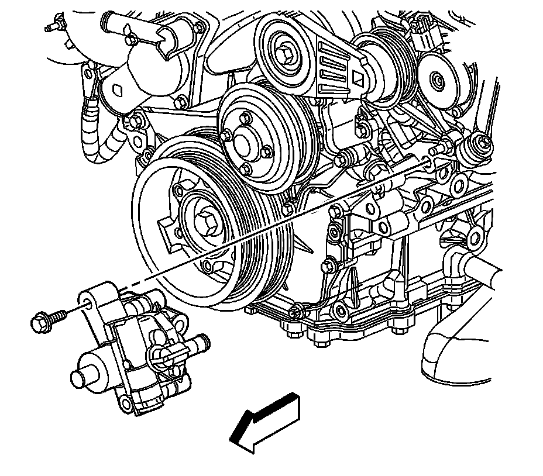

Power Steering Pump Replacement
Power Steering Pump Replacement (LH2 - Gas, 8 Cylinder, 4.6L, SFI, V8, DOHC, HO)
Removal Procedure
1. Remove the front air deflector. Refer to Front Air Deflector Replacement (Service and Repair) .
2. Place drain pans under the vehicle as needed.
3. Remove as much power steering fluid from the remote power steering fluid reservoir as possible.
4. Remove the air cleaner assembly. Refer to Air Cleaner Assembly Replacement (Service and Repair) .
5. Remove the power steering pump pulley. Refer to Power Steering Pump Pulley Replacement (Service and Repair) .

6. Disconnect the power steering fluid reservoir outlet hose from the power steering pump.
7. Disconnect the power steering gear inlet hose from the power steering pump.

8. Remove the power steering pump bolt.

9. Remove the power steering pump bracket bolt.
10. Remove the power steering pump and bracket from the vehicle.
11. Transfer the power steering pump bracket, if necessary. Refer to Power Steering Pump Bracket Replacement (LY7 - Gas, 6 Cylinder, 3.6L, SFI, V6) (Service and Repair)Power Steering Pump Bracket Replacement (LH2 - Gas, 8 Cylinder, 4.6L, SFI, V8, DOHC, HO) (Service and Repair) .
Installation Procedure
1. Install the power steering pump and bracket to the vehicle.
Notice: Refer to Fastener Notice (Fastener Notice) .
2. Install the power steering pump bracket bolt.
Tighten the bolt to 50 N.m (37 lb ft).
3. Install the power steering pump bolt.
Tighten the bolt to 50 N.m (37 lb ft).
4. Connect the power steering gear inlet hose to the power steering pump.
5. Connect the power steering fluid reservoir outlet hose to the power steering pump.
6. Clean any excess power steering fluid from the vehicle and remove the drain pans.
7. Install the front air deflector. Refer to Front Air Deflector Replacement (Service and Repair) .
8. Install the power steering pump pulley. Refer to Power Steering Pump Pulley Replacement (Service and Repair) .
9. Install the air cleaner assembly. Refer to Air Cleaner Assembly Replacement (Service and Repair) .
10. Fill and bleed the power steering system. Refer to Power Steering System Bleeding (Service and Repair) .